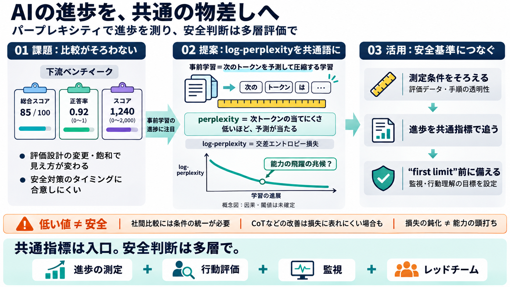

為 AI 下一階段建立標準 | OpenAI
# 為 AI 下一階段建立標準 我們的使命是確保通用人工智慧造福全人類。正如 Sam Altman 近期所述，以及 Jakub Pachocki 所提出，我們以三大目標為優先，推進實現這項使命的工作： 1. 打造自動化 AI 研究員，與…

AIの進歩を「各社バラバラ」から「共通の科学的指標」へ揃え、将来の安全基準（ガードレール）に接続する提案です。
AIの進歩を下流ベンチマーク（特定タスクの成績）で比べると、評価設計の変更や飽和で実態を取り違えやすくなります。
近年の伸びは「個別テクニックの寄せ集め」より、巨大データで予測器（圧縮器に相当）を育てる中核プロセスによって押し上げられます。
OpenAIのJakub Pachocki氏らの文脈では、AI進歩の共通測定としてlog-perplexity（= 交差エントロピー損失）を位置づけます。
GPT-3.5以降でlog-perplexityがどう推移したかを追い、その変化の過程で会話・推論・サイバー/数学などの大きな飛躍が現れた可能性が示されます。
深層学習では「ある閾値を超えると、新しい能力が急に現れる（エマージェントに見える）」ことがあります。著者はlog-perplexityの下がり方が、その手掛かりになり得ると述べます。
下流ベンチが変わっても比較可能な事前学習指標を共通言語にし、「ある限界を越える前に何が必要か」を業界で共有しようとします。
パープレキシティはタスク達成や安全性を直接測りません。したがって、危険行動・悪用耐性・監視可能性は別枠で評価が必要です。
評価データセットや学習データ混合が社ごとに異なるため、単純比較は歪みやすいと認めています。だからこそ透明性と転用可能性の設計が要になります。
損失が0に近づくこと自体が不可能（または意味が変わる）可能性があります。さらに、進歩の鈍化が必ずしも能力の頭打ちを意味しない可能性も示唆されます。
本提案の強みは、進歩議論を“比較可能性が高い事前学習指標”へ寄せる点です。一方で安全判断は、限界を前提に行動・監視・レッドチーム評価と組み合わせる必要があります。
本稿は、提示された要約文の論旨に基づく圧縮スライドです。以下は中心概念の“出どころ”としての手掛かりです。
# 為 AI 下一階段建立標準 我們的使命是確保通用人工智慧造福全人類。正如 Sam Altman 近期所述，以及 Jakub Pachocki 所提出，我們以三大目標為優先，推進實現這項使命的工作： 1. 打造自動化 AI 研究員，與…
# 為 AI 下一階段建立標準 我們的使命是確保通用人工智能造福全人類。正如 Sam Altman 最近所闡述，以及 Jakub Pachocki 所指出，我們以三大目標為重點，推進實現這項使命的工作： 1. 引領 AI 進步的下一階段…
私たちの使命は、汎用人工知能が全人類に利益をもたらすようにすることです。Sam Altman が先日示した内容と Jakub Pachocki の説明に沿って、私たちは次の 3 つの主要目標を掲げ、この使命の達成に向けた取り組みを優先してい…
倫理的考慮事項：安全性チェックが人間から AI に移行されると、AI の安全性に対する人間の監視が減り、バイアスのあるモデルが RBR の報酬提供に使用された場合、モデル内の潜在的なバイアスが増幅される可能性があります。この対処として、研究…
8. 若者の安全フレームワークは、機会、リテラシー、保護を促進すべきです。若者は、学習、創造性、スキル開発、将来の機会を支える AI ツールにアクセスできるべきであり、同時に AI を安全かつ責任を持って利用するために必要な知識と批判的…